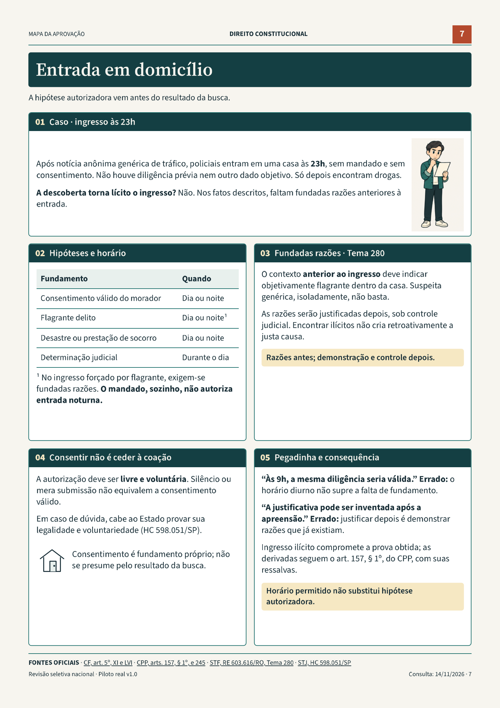
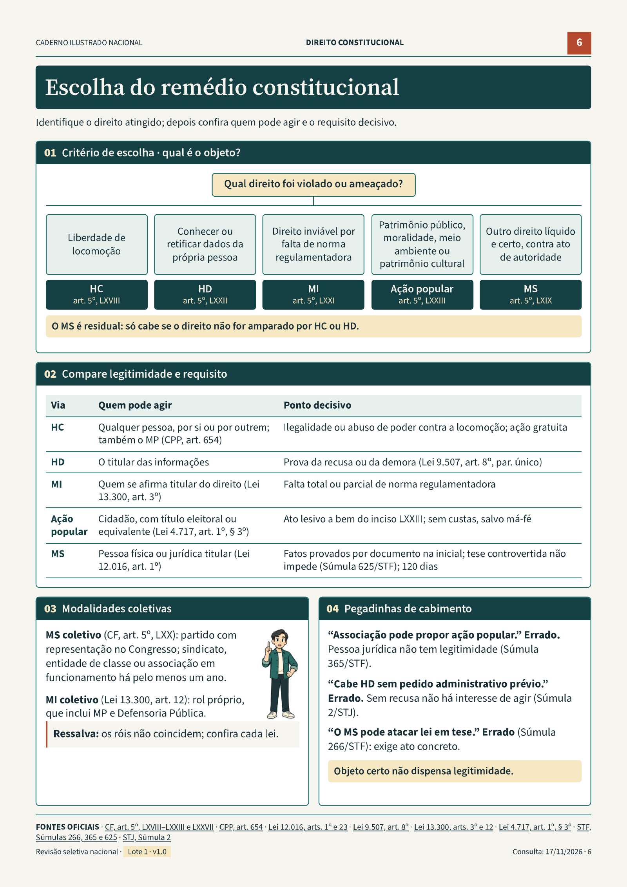
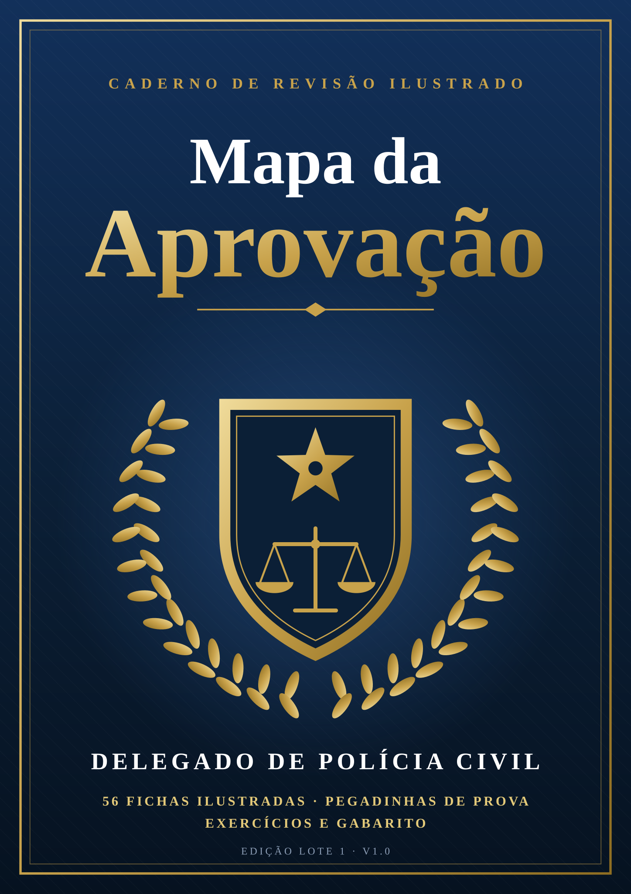
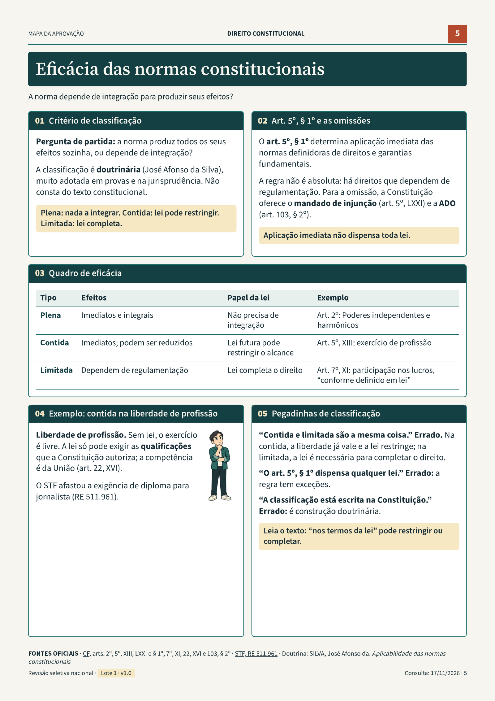
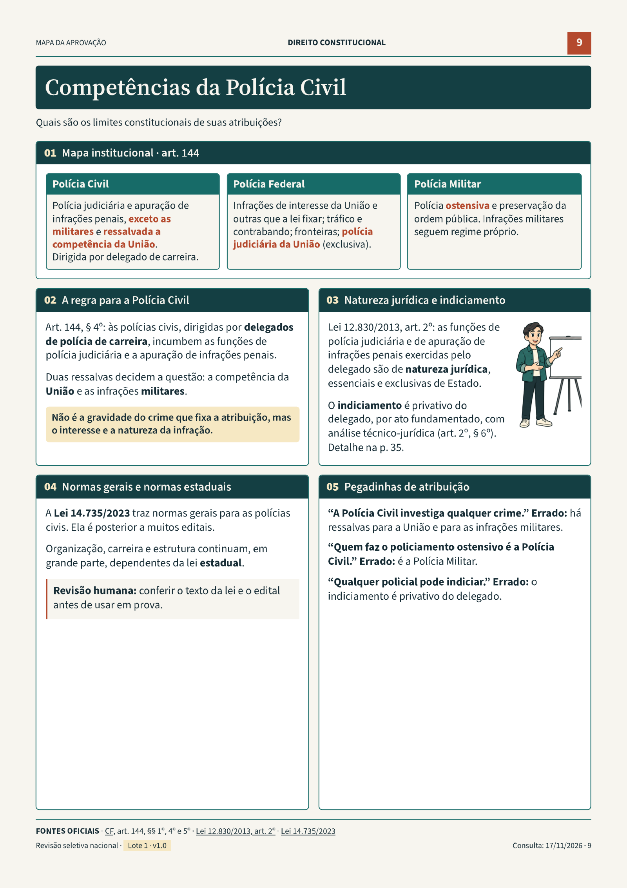

Revise o que decide a prova de Delegado, sem reler tudo de novo
56 fichas ilustradas que partem de uma pergunta de prova, mostram o caminho até a resposta e destacam as pegadinhas.



- R$
- Entrega imediata por e-mail
- Garantia de dias
- 56fichas ilustradas
- 15disciplinas do edital
- 70páginas em PDF
- 8páginas de exercícios e gabarito
Já releu a matéria três vezes e ainda errou a questão?
- Doutrina demais e tempo de menos
- Institutos parecidos que se confundem
- Jurisprudência espalhada em vários lugares
- Pegadinhas que derrubam quem conhecia a matéria
Não é só um resumo. É um mapa de decisão.
Cada ficha mostra por onde a questão deve ser analisada: primeiro o critério, depois a exceção e, por fim, a pegadinha que a banca costuma usar.
Uma ficha para cada ponto que cai
Toda ficha segue a mesma estrutura. Você sabe onde está a regra, onde está a pegadinha e de onde veio a informação.

Pergunta de partida
A ficha começa pela pergunta que a prova faz, não por um resumo genérico.
Caminho em módulos
Blocos numerados (01, 02, 03…) levam até a resposta, sem repetir conteúdo.
Faixa da pegadinha
A regra ou o critério decisivo resumido em uma linha, fácil de achar na revisão.
Fonte oficial no rodapé
Artigos, súmulas e julgados usados, com a data da consulta.
Cada ficha separa legislação, jurisprudência, doutrina e inferência editorial. Quando há divergência, o texto avisa.
O mesmo assunto, dois formatos
À esquerda, o conteúdo em texto corrido. À direita, a ficha. Arraste a barra ou use as setas do teclado.
Teste: em qual lado você acha o ponto decisivo mais rápido?
O texto corrido traz o mesmo conteúdo e as mesmas fontes da ficha. Foi escrito só para esta comparação.
Veja algumas das páginas que você vai receber
Páginas reais do material. Toque para ampliar e ler.
Deslize para o lado para ver mais →
Um aliado na caminhada até a aprovação
Quando comecei a utilizar o caderno, percebi uma diferença importante na minha rotina. Os conteúdos ficaram mais organizados, as informações passaram a fazer mais sentido e as revisões se tornaram muito mais práticas.
O Mapa da Aprovação não substituiu minha dedicação, minhas horas de estudo ou minha disciplina. Mas se tornou um aliado importante nessa caminhada, tornando minha preparação mais organizada, visual e eficiente.
Ler o depoimento completo
Minha jornada até a aprovação: o material que mudou a forma como eu estudava para Delegado
Se alguém me dissesse, no início da minha preparação, que um caderno ilustrado faria tanta diferença na minha jornada até a aprovação no concurso de Delegado, talvez eu não acreditasse.
Assim como muitos concurseiros, comecei cheio de sonhos, determinação e vontade de conquistar minha vaga. Mas, com o passar do tempo, percebi que estudar para um concurso tão concorrido exigia muito mais do que dedicação.
Eram inúmeras leis para memorizar, conteúdos extensos, artigos que pareciam não ter fim e uma quantidade enorme de informações que eu precisava aprender, revisar e, principalmente, lembrar na hora da prova.
Eu estudava por horas, fazia anotações, grifava materiais e tentava organizar tudo da melhor maneira possível. Mas havia um problema: muitas vezes, depois de estudar determinado assunto, sentia que não conseguia lembrar de tudo quando precisava revisar.
Era frustrante dedicar tanto tempo aos estudos e ter a sensação de que algumas informações simplesmente desapareciam da minha memória.
Foi nesse momento que percebi que precisava mudar minha maneira de estudar.
Até que conheci o Mapa da Aprovação.
Confesso que, inicialmente, o que mais me chamou a atenção foi a proposta de transformar conteúdos complexos em materiais ilustrados, organizados e muito mais fáceis de visualizar.
Quando comecei a utilizar o caderno, percebi uma diferença importante na minha rotina.
Os conteúdos ficaram mais organizados, as informações passaram a fazer mais sentido e as revisões se tornaram muito mais práticas. Em vez de me deparar com páginas intermináveis de texto, eu conseguia visualizar os assuntos, identificar os pontos importantes e estabelecer conexões entre os conteúdos.
O que antes parecia confuso começou a ficar mais claro.
Passei a aproveitar melhor meu tempo, revisar com mais facilidade e estudar com muito mais direcionamento.
E talvez a maior mudança tenha sido na minha confiança.
Aos poucos, deixei de sentir que estava apenas acumulando conteúdo e comecei a perceber que estava realmente construindo conhecimento.
O Mapa da Aprovação não substituiu minha dedicação, minhas horas de estudo ou minha disciplina. Mas se tornou um aliado importante nessa caminhada, tornando minha preparação mais organizada, visual e eficiente.
E foi com muito esforço, constância e as ferramentas certas que consegui alcançar um dos maiores objetivos da minha vida: a aprovação no concurso de Delegado.
Hoje, olhando para trás, entendo que não basta estudar muito. É preciso estudar com estratégia, saber organizar o conhecimento e encontrar métodos que realmente funcionem para você.
Se eu pudesse dar um conselho para quem está começando ou já está há meses nessa batalha, seria este:
Não espere chegar à exaustão para perceber que precisa melhorar sua forma de estudar.
Cada hora de preparação importa. Cada revisão importa. Cada detalhe que você consegue aprender e lembrar pode fazer diferença no dia da prova.
Se você também sonha em conquistar sua vaga na carreira de Delegado, conheça o Mapa da Aprovação.
Talvez ele seja justamente o recurso que faltava para transformar sua rotina de estudos e tornar sua caminhada até a aprovação mais organizada e direcionada.
Porque sua aprovação não depende apenas de quanto tempo você estuda, mas também de como você transforma esse tempo em conhecimento.
Nos vemos na posse!
Relato individual. Os resultados variam e dependem da dedicação de cada pessoa. O Mapa da Aprovação não garante aprovação.

Tudo para revisar para Delegado, em um caderno só
As matérias-chave do caderno
Toque em uma disciplina para ver o tema de cada ficha.
Se você se reconhece aqui, o Mapa é para você
- Já estudou a matéria e quer revisar sem recomeçar do zero
- Confunde institutos parecidos, como HC, HD, MI e MS
- Erra questão por causa de uma exceção ou de uma pegadinha
- Quer revisar com a fonte oficial à mão, na reta final
E como usar? Quatro passos
- 1
Leia a pergunta
Tente responder a pergunta de partida antes de ler a ficha.
- 2
Confira na ficha
Siga os módulos e veja onde estava a pegadinha.
- 3
Resolva os exercícios
O bloco de exercícios está nas páginas 61 a 64.
- 4
Corrija com o gabarito
O gabarito comentado, nas páginas 65 a 68, explica cada resposta.
O que o Mapa não substitui
- Curso completo e doutrina.
- A leitura do edital do seu concurso.
- A legislação do seu estado. O caderno é nacional e não trata a norma local como regra geral.
Tudo o que será liberado para você hoje
Entrega imediata no seu e-mail depois da confirmação do pagamento.
Valor do caderno
R$
Quero o Mapa da AprovaçãoFormas de pagamento
- Pix
- Cartão de crédito
Garantia de dias. Se o material não for para você, peça o reembolso dentro do prazo.
- Entrega imediata no seu e-mail
- Pagamento em ambiente seguro
Garantia de dias, a partir da compra
Compre sem risco. Você tem até dias, a partir da compra, para pedir o reembolso. O reembolso é pedido pela plataforma em que o pagamento é feito.
- Entrega imediata: o PDF chega ao seu e-mail assim que o pagamento é confirmado.